Libraries
A library is an optional collection of things you reuse, all of one kind. You design its fields once, then every item in it has the same shape, and you can add any item to as many lists as you like. In this guide the Recipe Box library holds every recipe we cook.
You don't need a library to make a list: lists can be built entirely from notes, photos, links, files, audio notes and scanned text (see All the ways to add to a list). A library pays off when the same things turn up in list after list.
Open the Libraries tab to see all your libraries. Each card shows the library's name, its primary field (the 🔑 chip) and the start of its description. Tap a card to open it, or tap the ☆ to add it to your favourites.
The buttons at the top are:
- ?: a short What is a Library? guide.
- 📁: make a library from a folder of files.
- 🔍: search every item in every library at once.
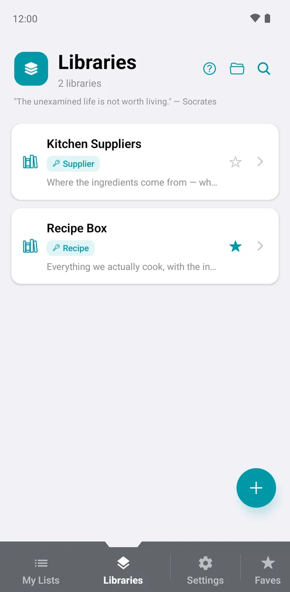
Create a library
- On the Libraries tab, tap +.
- Type a Library Name, for example Pantry or Recipes.
- Tap + ADD FIELD for each piece of information you want to keep. Give it a Name and choose a Data Type (see Field types).
- Tick Set as Primary Field on the field that names each item (see below).
- Tap Save in the top corner.
You don't need every field up front. You can add, rename, reorder or delete fields later from Edit Fields.
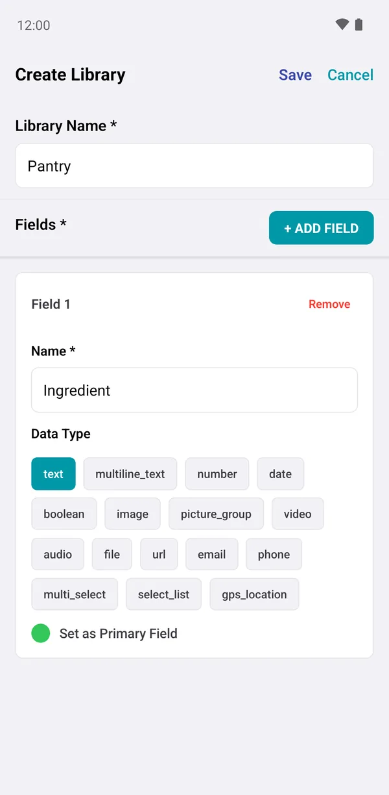
Design the fields
Open a library and you'll see its description, three buttons and the DEFINE ITEM STRUCTURE section:
- View Items: the list of everything in the library.
- Add Item: a blank form for a new item.
- CSV: import or export many items at once with a spreadsheet (see CSV import).
- Edit Fields: add, change and reorder the fields.
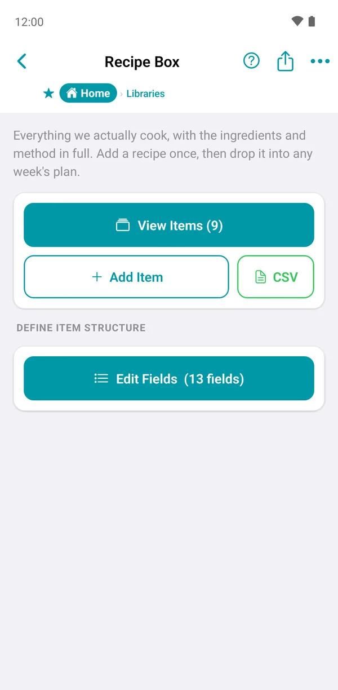
The Fields screen lists every field in order, with its type underneath. From here you can:
- Tap Add Field to add a new one.
- Tap a field to rename it, change its type, make it required or unique, or delete it.
- Drag the handle to change the order fields appear in.
- Turn on Visible in summary for the one or two fields you want to see on list tiles. In the Recipe Box, Cuisine, Time and Difficulty are shown: Greek Salad · Greek · 10 · Easy.
The Metadata card at the bottom shows how many items the library holds and how much space its photos and files use.
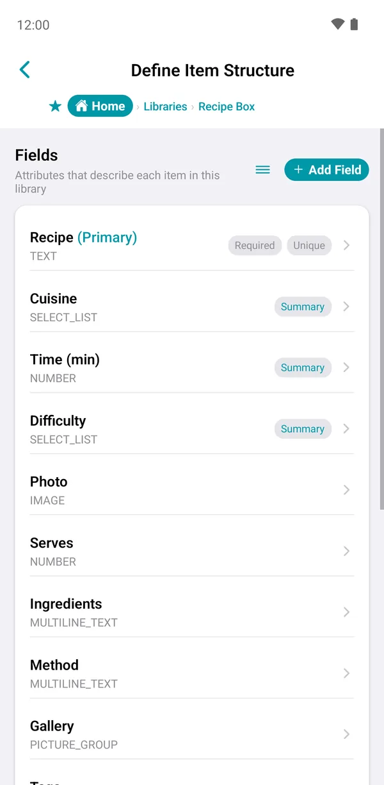
Select lists: set the allowed values
A select list field lets you pick exactly one value from a fixed set, for example Cuisine: Italian, Mexican, Indian, Greek, Asian, American, British, French. After creating the field, tap it on the Fields screen and add each choice under ALLOWED VALUES.
If you later remove a value, items that already use it keep it. The value is marked no longer an option so you can spot and change it.
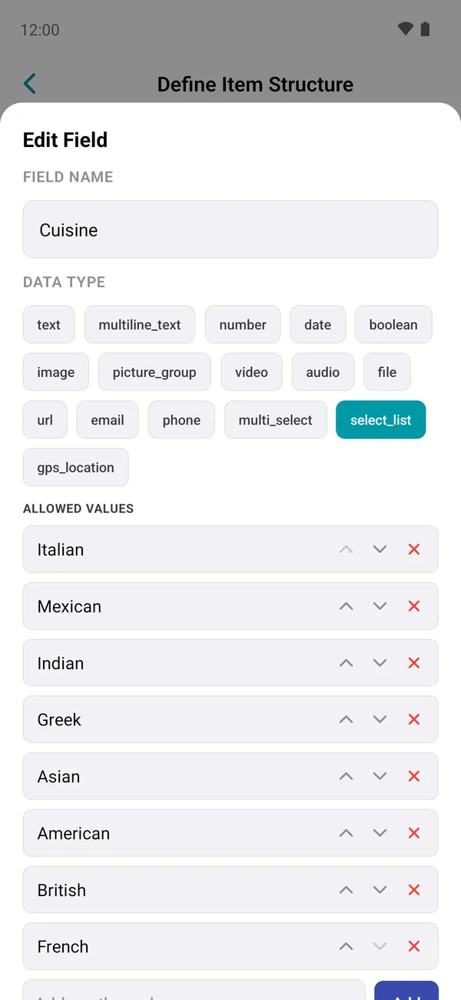
The primary field
Every library has one primary field, which is the name each item is known by. In the Recipe Box it's Recipe; in Kitchen Suppliers it's Supplier. The primary field:
- is always required, and must be different for every item;
- is what appears in bold on every tile and in search results;
- is how ListHive matches items when you import a CSV or a
.listhivefile, so a recipe called Greek Salad in a file updates or skips your own Greek Salad instead of creating a copy.
Only these types can be a primary field: text, number, date, link, email, phone and GPS location. You can change which field is primary later, from that field's settings on the Fields screen. ListHive checks that every item has a unique value first.
Add and edit items
- Open the library and tap Add Item (or + in the item list).
- Fill in the fields. Photo, video, audio and file fields have a Choose… button; a gallery field has Add Photos so you can pick several at once.
- Tap Add.
To change an item later, open it and switch the toggle at the top from View to Edit, make your changes and tap Save. If you leave with unsaved changes, ListHive asks whether to keep editing.
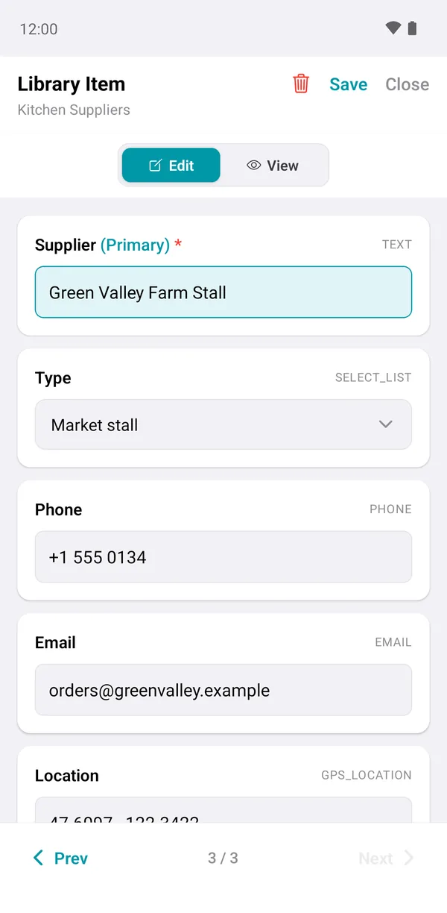
View an item
Tap any item to open it in View mode. Everything is laid out for reading: photos full width, select lists and tags as chips, links you can tap, and players for video and audio.
- Double-tap any value to copy it.
- Use Prev and Next at the bottom to move through the library without going back to the list.
- The small and large A buttons change the text size.
- The clock icon shows Usage: which lists and groups this item has been used in, and when.
- The share icon sends just this item (see Sharing).
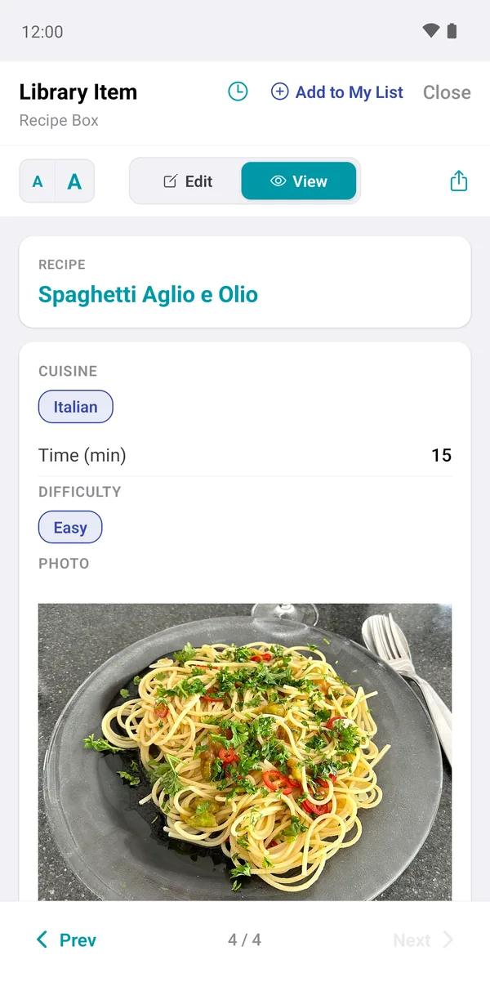
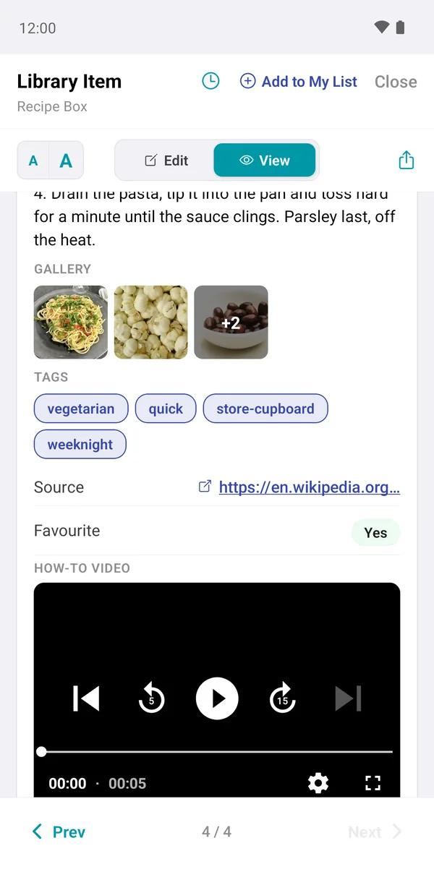
Find items: search and sort
Tap View Items to see the whole library. The row of chips under the search box sorts the list: tap a field once for A→Z, again for Z→A, and a third time to switch sorting off. ListHive remembers your choice for each library.
Search inside one field
Typing in the search box looks through every field. To look in just one field, start with @, the field name, a colon and the text:
@Tags: quickfinds the quick recipes.@Cuisine: italianfinds everything Italian.
Searching ignores capital letters. To search across all your libraries at once, use 🔍 on the Libraries tab.
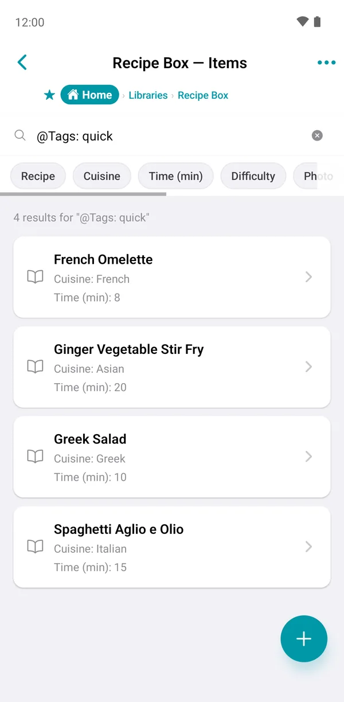
Select several items
Long-press an item in the list to start selecting, then tap more items to add them. The bar at the bottom offers:
- Share: send the selected items as a file, text or picture.
- Move or Copy: to Another Library or into a My List.
- Delete: remove them from the library.
The ••• menu at the top of the list also has Select Items… and Delete All Items.
Deleting a library item also removes it from every list it was added to.
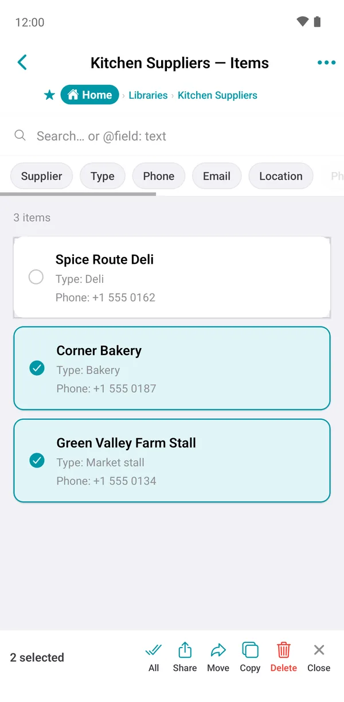
Add an item to a list
While viewing an item, tap Add to My List at the top. Choose the list and, for a list with groups, the group. You can also create a new list or group right there with Create & Select.
You can also add them from inside a list with + → Library Item. See Items from a library.
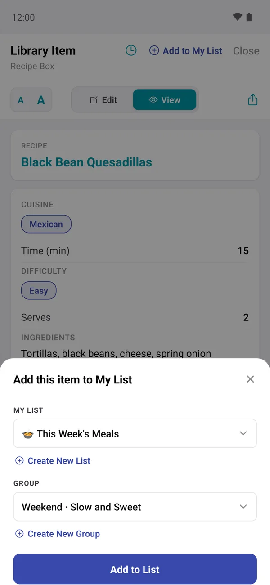
Make a library from a folder
If you already have a folder of photos, songs, videos or documents, ListHive can turn it into a library in one step. Tap 📁 on the Libraries tab, choose the folder, pick which FILE TYPE to include and whether to Include sub-folders, then tap Scan Folder. Each file becomes an item with Title, File Path and Sub Folder fields.
Folders in Google Drive and other cloud storage often can't be scanned. Download the files to your phone first.
Rename, duplicate or delete a library
Open the library and tap ••• in the top corner: Edit changes the name and description, Duplicate makes a full copy, and Delete removes the library. You can also duplicate a library by long-pressing its card on the Libraries tab.
Deleting a library also removes its items from every list that uses them. Consider exporting it as a file first.